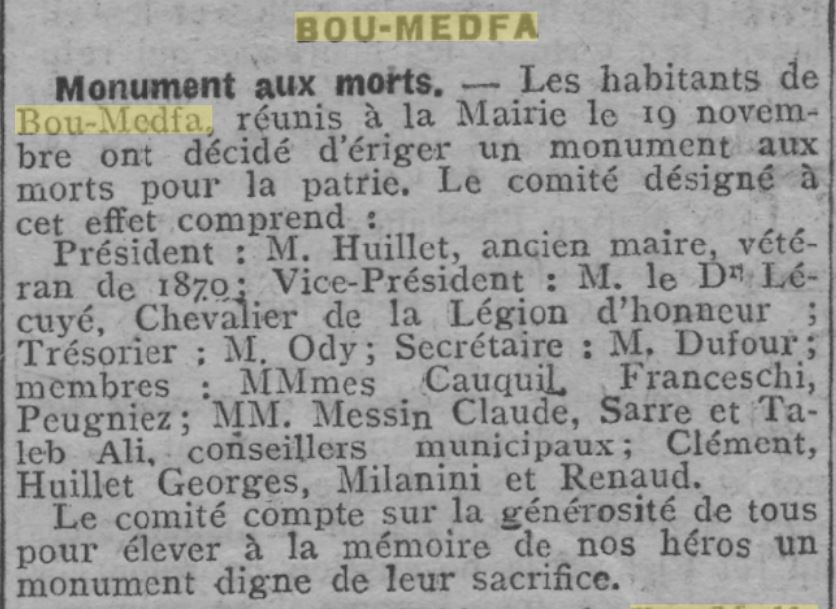

MONUMENT AUX MORTS
Le 29/12/1922 il est décidé de construire le monument aux morts de la guerre 14/18 (renseignements l'ECHO D'ALGER) voir ci dessous.
Il sera détruit en juillet 1962 (au lendemain de l'indépendance !)

Vers la page d'ACCUEIL de mon site